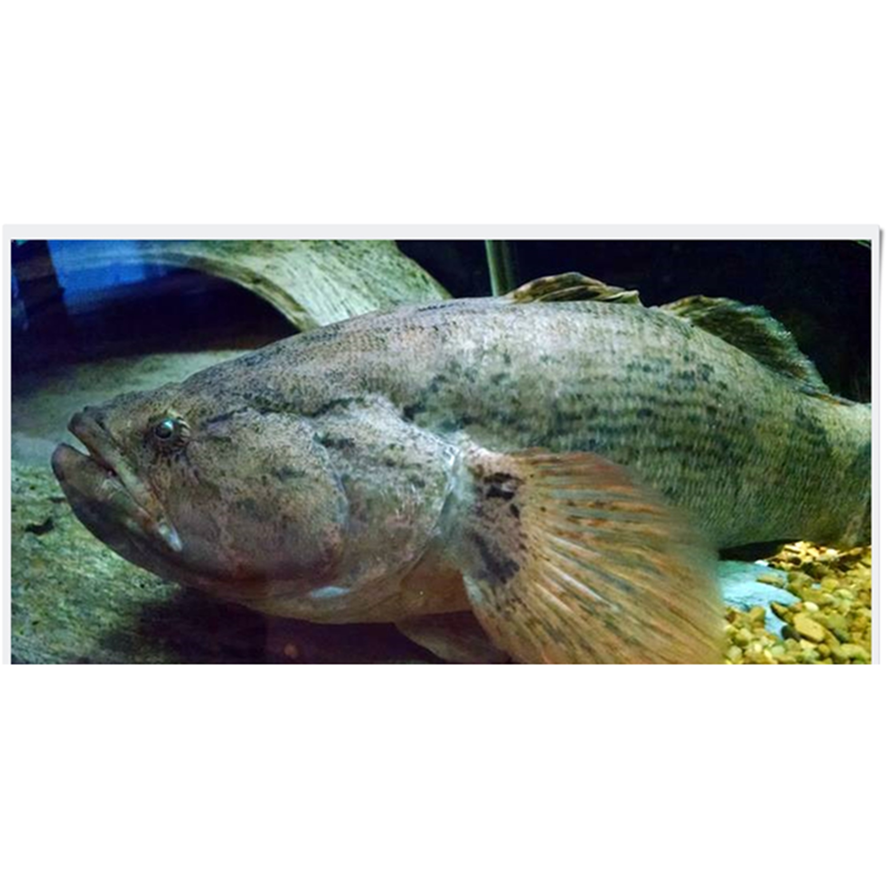

Ikan Betutu
Ikan betutu adalah salah satu jenis ikan air tawar, yang menyebar di Asia Tenggara hingga kepulauan Nusantara. Ikan ini memiliki bentuk yang sangat unik dan juga memiliki warna yang sangat bervariasi.
Ikan betutu di alam aslinya hidup di air tawar, seperti di sungai-sungai, di rawa-rawa, di telaga-telaga, di danau-danau, dan di waduk-waduk. Ikan-ikan betutu yang masih kecil sampai ukuran ± 100 g lebih senang tinggal di perairan yang dangkal, sedangkan yang sudah besar lebih suka tinggal di daerah yang arusnya tidak terlalu deras. Ikan betutu senang tinggal di perairan yang banyak ditumbuhi tumbuh-tumbuhan air seperti enceng gondok (Eichornia crassipes), kayu apu (Pistia.Sp), ganggeng (Hydrilla Sp.), kangkung (Ipomoea. Sp.), dan lain-lain.
Ikan betutu ini memiliki tubuh yang terdiri dari kepala, badan dan ekor dengan perbandingan antara 1: 4 : 1. Kepala pada ikan betutu ini sangat besar di bandingkan dengan ukuran atau bentuk tubuhnya, memiliki tutup insang, mata, hidung, mulut yang menghiasi bagian kepala. Bentuk insang ikan betutu ini gepeng atau pipih yang menutup atau membuka bagian belakang kepala. Bagian mata pada ikan betutu ini terdapat di kepala dengan ukuran bulat kecil berwarna coklat muda dan juga memiliki lingkaran yang hampir menyerupai cincin. Bagian hidung pada ikan betutu ini terletak pada bagian atas kepala, dan bagian mulut pada ikan ini berada di depan kepala yang membelah.
Semua bagian ikan betutu ini di tutup dengan sisik kecil atau halus, mulai dari kepala hingga pangkal ekor dengan warna coklat muda atau campuran. Ikan ini juga terdapat bercak hitam atau cokelat, yang terdapat di bagian tertentu tubuh ikan betutu. Bagian lainnya yaitu sirip dada, sirip perut, sirip dubur, dan sirip ekor yang tampak dilihat.
Kandungan Ikan Betutu (dalam 100 gram)
| Protein (gr) | Kalori (Kal) | Lemak (gr) | Karbohidrat (gr) | Kalsium (mg) | Zat Besi (mg) | Fosfor (mg) | Vit A (IU) | Vit B1 (mg) | Vit C (mg) | BDD (%) |
|---|---|---|---|---|---|---|---|---|---|---|
| - | - | - | - | - | - | - | - | - | - | - |
Manfaat Ikan Betutu
- Menghaluskan Kulit
- Membuat Awet Muda
- Sebagai sumber energi
- Meningkatkan Vitalitas
- Jahitan Cepat Kering
- Mengobati Patah Tulang
- Meningkatkan Kadar Albumin Di Dalam Tubuh
Jika wanita mengkonsumsi ikan betutu minimal 100 gram setiap harinya bisa membuat kulitnya halus. Hal itu dikarenakan ikan betutu kaya akan vitamin E. Vitamin E dipercaya sebagai vitamin yang bermanfaat untuk kesehatan dan juga kecantikan kulit.
Selain menghaluskan kulit, khasiat ikan betutu yang banyak mengandung vitamin E tersebut bisa membuat wanita menjadi awet muda. Karena vitamin E di ikan betutu bisa meremajakan kulit, membuang sel-sel kulit mati di permukaan wajah. Jika wajah terhindar dari semua itu, wajah pun akan kelihatan lebih awet muda. Vitamin E dalam ikan betutu juga bisa menghilangkan kerutan-kerutan di wajah.
Kalori yang terdapat di dalam daging belut cukup tinggi sehingga bisa menjadi sumber energi yang cukup untuk beraktifitas harian. Itulah mengapa harus dicermati saat mengkonsumsinya dengan nasi yang notabene juga sebagai sumber energi.
Bagi pria, mengkonsumsi ikan betutu ini memiliki manfaat untuk meningkatkan vitalitas. Hal itu dikarenakan di dalam ikan betutu tersebut banyak mengandung enzim dan hormon yang membantu meningkatkan vitalitas bagi pria. Hal itu dikarenakan dalam enzim dan hormon yang dimiliki oleh ikan betutu bisa merangsang hormon libido meningkat. Banyak pria yang marasa libidonya meningkat setelah memakan ikan ini.
AKandungan albumin di dalam ikan betutu bermanfaat untuk membuat jahitan pasca operasi menjadi cepat kering. Hal itu dikarenakan albumin bisa mempercepat panyatuan jaringan kulit di dalam tubuh. Luka bekas jahitan operasi pun perlahan-lahan akan mudah kering. Jahitan operasi yang tidak cepat kering biasanya akan berair dan menimbulkan infeksi. Oleh sebab itulah pasien pasca operasi diwajibkan untuk mengkonsumsi ikan ini.
Pengobatan pasien patah tulang menggunakan ikan betutu adalah cara yang tepat. Hal itu dikarenakan di dalam ikan betutu memiliki kadar albumin yang tinggi. Kadar albumin tinggi itu bermanfaat dalam pemulihan sel-sel tubuh yang rusak dan juga terbelah. Pasien patah tulang, akan memiliki sel yang terbelah. Untuk memperbaiki dan memulihkan sel tubuh yang telah terbelah tadi bisa menggunakan albumin yang ada di dalam ikan betutu.
Albumin adalah protein yang diproduksi oleh hati, kekurangan albumin bisa membuat seseorang mudah terkena infeksi hepatitis. Bagi orang yang memiliki kadar albumin rendah, sangat dikhawatirkan bisa terinfeksi dengan berbagai macam penyakit hati misalnya saja liver, hepatitis bahkan sirosis hati. Mengkonsumsi albumin di dalam ikan betutu dipercaya bisa menigkatkan kadar albumin di dalam tubuh seseorang.